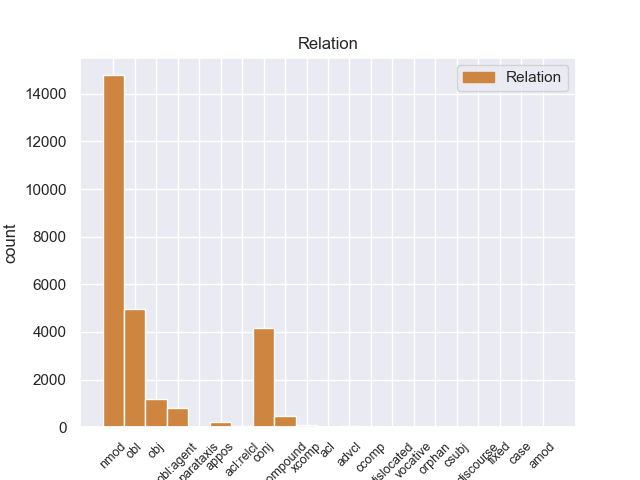
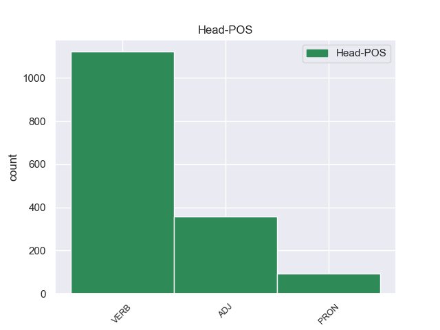
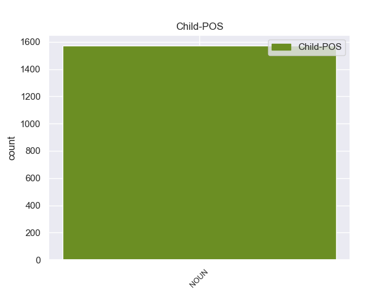

Distribution of features within this leaf



Agreement Rules sorted by frequency.
- When the dependent token is the nominal subject(nsubj) of the head token, and the head token is VERB and the dependent token is NOUN.
1 Gli _ _ _ _ 0 _ _ _
2 edifici edificio NOUN S Gender=Masc|Number=Plur 8 nsubj 8:nsubj _
3 di _ _ _ _ 0 _ _ _
4 il _ _ _ _ 0 _ _ _
5 centro _ _ _ _ 0 _ _ _
6 storico _ _ _ _ 0 _ _ _
7 erano _ _ _ _ 0 _ _ _
8 costruiti costruire VERB V Gender=Masc|Number=Plur|Tense=Past|VerbForm=Part 0 _ _ _
9 con _ _ _ _ 0 _ _ _
10 l’ _ _ _ _ 0 _ _ _
11 argilla _ _ _ _ 0 _ _ _
12 rossa _ _ _ _ 0 _ _ _
13 di _ _ _ _ 0 _ _ _
14 il _ _ _ _ 0 _ _ _
15 deserto _ _ _ _ 0 _ _ _
16 , _ _ _ _ 0 _ _ _
17 un _ _ _ _ 0 _ _ _
18 materiale _ _ _ _ 0 _ _ _
19 molto _ _ _ _ 0 _ _ _
20 fragile _ _ _ _ 0 _ _ _
21 . _ _ _ _ 0 _ _ _
1 Il _ _ _ _ 0 _ _ _
2 riso riso NOUN S Gender=Masc|Number=Sing 4 nsubj 4:nsubj _
3 è _ _ _ _ 0 _ _ _
4 utile utile ADJ A Gender=Masc|Number=Sing 0 _ _ _
5 per _ _ _ _ 0 _ _ _
6 curare _ _ _ _ 0 _ _ _
7 i _ _ _ _ 0 _ _ _
8 disturbi _ _ _ _ 0 _ _ _
9 di _ _ _ _ 0 _ _ _
10 l' _ _ _ _ 0 _ _ _
11 intestino _ _ _ _ 0 _ _ _
12 , _ _ _ _ 0 _ _ _
13 di _ _ _ _ 0 _ _ _
14 lo _ _ _ _ 0 _ _ _
15 stomaco _ _ _ _ 0 _ _ _
16 e _ _ _ _ 0 _ _ _
17 soprattutto _ _ _ _ 0 _ _ _
18 l' _ _ _ _ 0 _ _ _
19 ulcera _ _ _ _ 0 _ _ _
20 . _ _ _ _ 0 _ _ _
1 Per _ _ _ _ 0 _ _ _
2 esempio _ _ _ _ 0 _ _ _
3 , _ _ _ _ 0 _ _ _
4 per _ _ _ _ 0 _ _ _
5 i _ _ _ _ 0 _ _ _
6 bambini _ _ _ _ 0 _ _ _
7 piccoli _ _ _ _ 0 _ _ _
8 i _ _ _ _ 0 _ _ _
9 giocattoli giocattolo NOUN S Gender=Masc|Number=Plur 12 nsubj 12:nsubj _
10 sicuri _ _ _ _ 0 _ _ _
11 sono _ _ _ _ 0 _ _ _
12 quelli quello PRON PD Gender=Masc|Number=Plur|PronType=Dem 0 _ _ _
13 che _ _ _ _ 0 _ _ _
14 non _ _ _ _ 0 _ _ _
15 hanno _ _ _ _ 0 _ _ _
16 parti _ _ _ _ 0 _ _ _
17 troppo _ _ _ _ 0 _ _ _
18 piccole _ _ _ _ 0 _ _ _
19 . _ _ _ _ 0 _ _ _
Disagree Examples:
1 Le _ _ _ _ 0 _ _ _
2 ripetute _ _ _ _ 0 _ _ _
3 telefonate telefonata NOUN S Gender=Fem|Number=Plur 5 nsubj 5:nsubj|7:nsubj _
4 hanno _ _ _ _ 0 _ _ _
5 finito finire VERB V Gender=Masc|Number=Sing|Tense=Past|VerbForm=Part 0 _ _ _
6 per _ _ _ _ 0 _ _ _
7 mettere _ _ _ _ 0 _ _ _
8 in _ _ _ _ 0 _ _ _
9 moto _ _ _ _ 0 _ _ _
10 i _ _ _ _ 0 _ _ _
11 dispositivi _ _ _ _ 0 _ _ _
12 di _ _ _ _ 0 _ _ _
13 sicurezza _ _ _ _ 0 _ _ _
14 e _ _ _ _ 0 _ _ _
15 le _ _ _ _ 0 _ _ _
16 ricerche _ _ _ _ 0 _ _ _
17 di _ _ _ _ 0 _ _ _
18 l' _ _ _ _ 0 _ _ _
19 utenza _ _ _ _ 0 _ _ _
20 da _ _ _ _ 0 _ _ _
21 la _ _ _ _ 0 _ _ _
22 quale _ _ _ _ 0 _ _ _
23 venivano _ _ _ _ 0 _ _ _
24 effettuate _ _ _ _ 0 _ _ _
25 . _ _ _ _ 0 _ _ _
1 La _ _ _ _ 0 _ _ _
2 prima _ _ _ _ 0 _ _ _
3 domenica domenica NOUN S Gender=Fem|Number=Sing 7 nsubj 7:nsubj _
4 d' _ _ _ _ 0 _ _ _
5 agosto _ _ _ _ 0 _ _ _
6 ha _ _ _ _ 0 _ _ _
7 fatto fare VERB V Gender=Masc|Number=Sing|Tense=Past|VerbForm=Part 0 _ _ _
8 vittime _ _ _ _ 0 _ _ _
9 anche _ _ _ _ 0 _ _ _
10 a _ _ _ _ 0 _ _ _
11 il _ _ _ _ 0 _ _ _
12 mare _ _ _ _ 0 _ _ _
13 e _ _ _ _ 0 _ _ _
14 su _ _ _ _ 0 _ _ _
15 le _ _ _ _ 0 _ _ _
16 strade _ _ _ _ 0 _ _ _
17 . _ _ _ _ 0 _ _ _
1 Le _ _ _ _ 0 _ _ _
2 autorità autorità NOUN S Gender=Fem 6 nsubj 6:nsubj _
3 croate _ _ _ _ 0 _ _ _
4 hanno _ _ _ _ 0 _ _ _
5 intanto _ _ _ _ 0 _ _ _
6 annunciato annunciare VERB V Gender=Masc|Number=Sing|Tense=Past|VerbForm=Part 0 _ _ _
7 che _ _ _ _ 0 _ _ _
8 il _ _ _ _ 0 _ _ _
9 blitz _ _ _ _ 0 _ _ _
10 è _ _ _ _ 0 _ _ _
11 praticamente _ _ _ _ 0 _ _ _
12 concluso _ _ _ _ 0 _ _ _
13 : _ _ _ _ 0 _ _ _
1 La _ _ _ _ 0 _ _ _
2 gendarmeria gendarmeria NOUN S Gender=Fem|Number=Sing 15 nsubj 15:nsubj _
3 francese _ _ _ _ 0 _ _ _
4 , _ _ _ _ 0 _ _ _
5 impegnata _ _ _ _ 0 _ _ _
6 in _ _ _ _ 0 _ _ _
7 indagini _ _ _ _ 0 _ _ _
8 su _ _ _ _ 0 _ _ _
9 il _ _ _ _ 0 _ _ _
10 patrimonio _ _ _ _ 0 _ _ _
11 di _ _ _ _ 0 _ _ _
12 Tapie _ _ _ _ 0 _ _ _
13 , _ _ _ _ 0 _ _ _
14 ha _ _ _ _ 0 _ _ _
15 identificato identificare VERB V Gender=Masc|Number=Sing|Tense=Past|VerbForm=Part 0 _ _ _
16 una _ _ _ _ 0 _ _ _
17 ditta _ _ _ _ 0 _ _ _
18 " _ _ _ _ 0 _ _ _
19 fantasma _ _ _ _ 0 _ _ _
20 " _ _ _ _ 0 _ _ _
21 , _ _ _ _ 0 _ _ _
22 la _ _ _ _ 0 _ _ _
23 International _ _ _ _ 0 _ _ _
24 Public _ _ _ _ 0 _ _ _
25 Sport _ _ _ _ 0 _ _ _
26 , _ _ _ _ 0 _ _ _
27 con _ _ _ _ 0 _ _ _
28 sede _ _ _ _ 0 _ _ _
29 legale _ _ _ _ 0 _ _ _
30 a _ _ _ _ 0 _ _ _
31 Forlì _ _ _ _ 0 _ _ _
32 , _ _ _ _ 0 _ _ _
33 che _ _ _ _ 0 _ _ _
34 avrebbe _ _ _ _ 0 _ _ _
35 emesso _ _ _ _ 0 _ _ _
36 fatture _ _ _ _ 0 _ _ _
37 false _ _ _ _ 0 _ _ _
38 a _ _ _ _ 0 _ _ _
39 favore _ _ _ _ 0 _ _ _
40 di _ _ _ _ 0 _ _ _
41 la _ _ _ _ 0 _ _ _
42 società _ _ _ _ 0 _ _ _
43 sportiva _ _ _ _ 0 _ _ _
44 Marsiglia _ _ _ _ 0 _ _ _
45 Calcio _ _ _ _ 0 _ _ _
46 per _ _ _ _ 0 _ _ _
47 circa _ _ _ _ 0 _ _ _
48 2 _ _ _ _ 0 _ _ _
49 miliardi _ _ _ _ 0 _ _ _
50 di _ _ _ _ 0 _ _ _
51 lire _ _ _ _ 0 _ _ _
52 . _ _ _ _ 0 _ _ _
1 Questa _ _ _ _ 0 _ _ _
2 vicenda vicenda NOUN S Gender=Fem|Number=Sing 5 nsubj 5:nsubj _
3 lo _ _ _ _ 0 _ _ _
4 ha _ _ _ _ 0 _ _ _
5 distrutto distruggere VERB V Gender=Masc|Number=Sing|Tense=Past|VerbForm=Part 0 _ _ _
6 . _ _ _ _ 0 _ _ _